Proyecto · Godot 4.7.2 · v0.1.1
Gaucho Zenón
RPG 3D de mundo abierto en la Patagonia de 1881. Zenón es un baqueano que no sabe leer, endeudado con el pulpero, que vive entre dos mundos sin pertenecer a ninguno. No hay enemigos: el conflicto es la deuda, el avance de la línea y el tiempo que queda.
9 tandasArte, trama, caballo, conchabos, sonido y exportado
4 finalesSargento, encargado, el cruce a Chile o solitario
436 MBVersión para Windows (meta: achicarla)
Dónde está todo
- Proyecto Godot:
G:\Proyectos GODOT\GauchoZenonRPG\gaucho-zenon-rpg - Repositorio: github.com/mosquito21/gaucho-zenon-rpg (tags v0.1 y v0.1.1)
- Contexto del juego:
JUEGO_INFO.md· trama:docs/TRAMA_Y_PERSONAJES.md· arte:docs/DIRECCION_DE_ARTE.md - Tandas del agente:
docs/agente/ESTADO.md· bitácora:docs/bitacora/ - Exportado:
..\exportado\GauchoZenon-v0.1.1\· intro en video:docs/video/GauchoZenon-intro-720p.mp4 - Ficha del proyecto: projects/gaucho-zenon
01ZenónLa referencia estética de todo el juego, y Zenón en el juego
Referencia estética
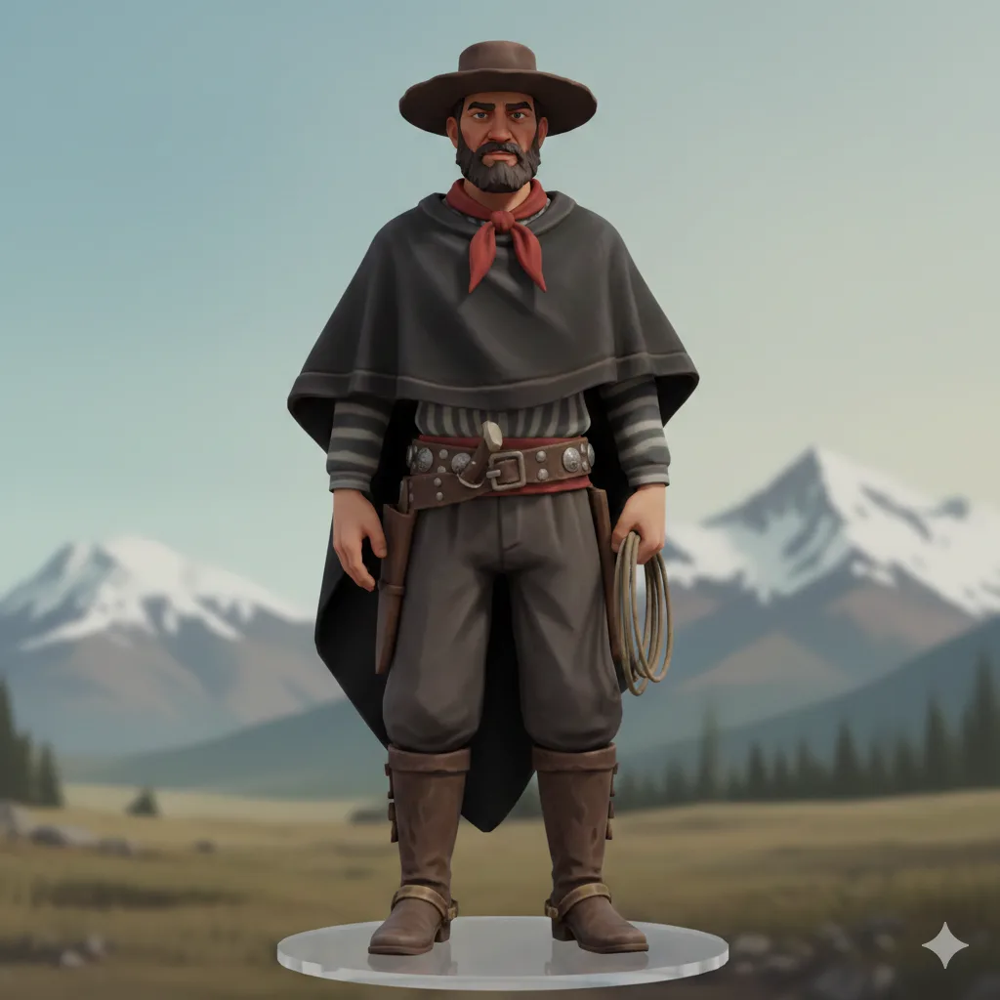
En el campamento de la tropa
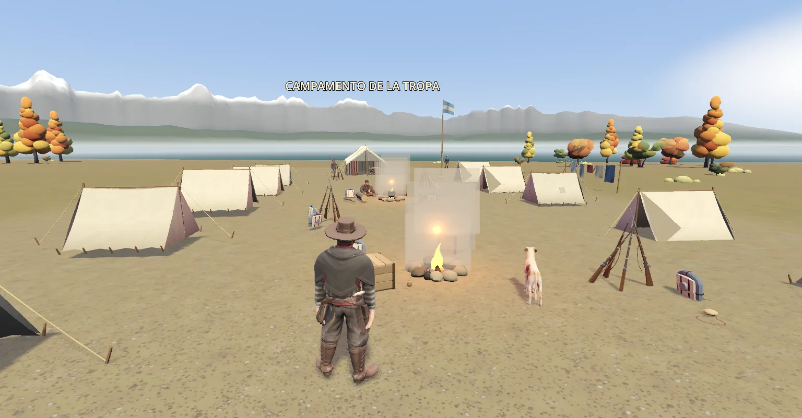
Pilares
| Pilar | En la práctica |
|---|---|
| Mundo abierto | La estepa sobre el Limay, con la cordillera siempre a la vista. A pie o a caballo con Ceniza. |
| Sin enemigos | Recados y conchabos para tres bandos. La confianza con cada uno nunca se muestra. |
| El recado como objeto moral | Zenón no sabe leer y lleva mensajes sellados; descubre para qué sirven cuando alguien se los lee. |
| Época de 1881 | Villegas lleva la línea al Nahuel Huapi. Habla de época, papeleta de conchabo y noticias de Roca. |
| Atmósfera | Música del disco "Nothofagus" de Mariano Amir Jatip, viento y animales. |
02Lugares
Pulpería de Don Ceferino
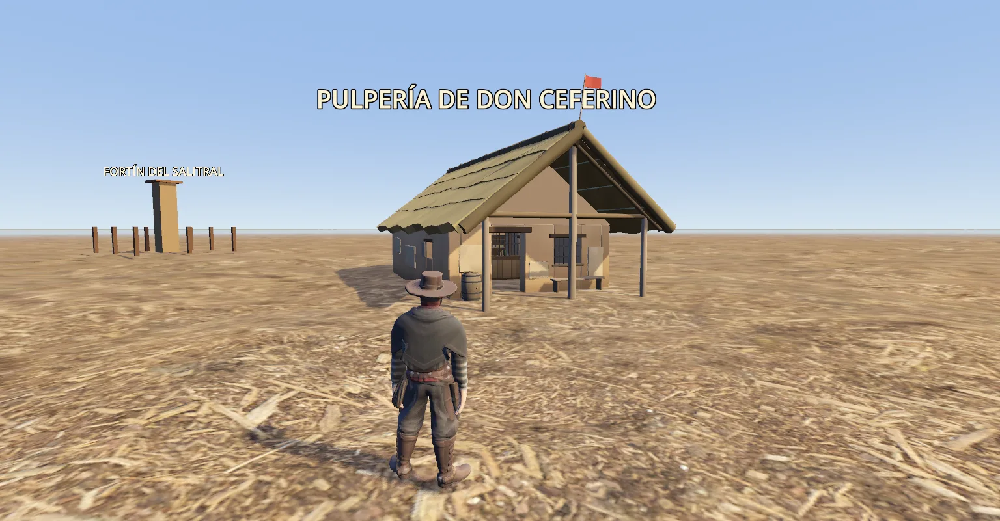
Pulpería y Fortín del Salitral
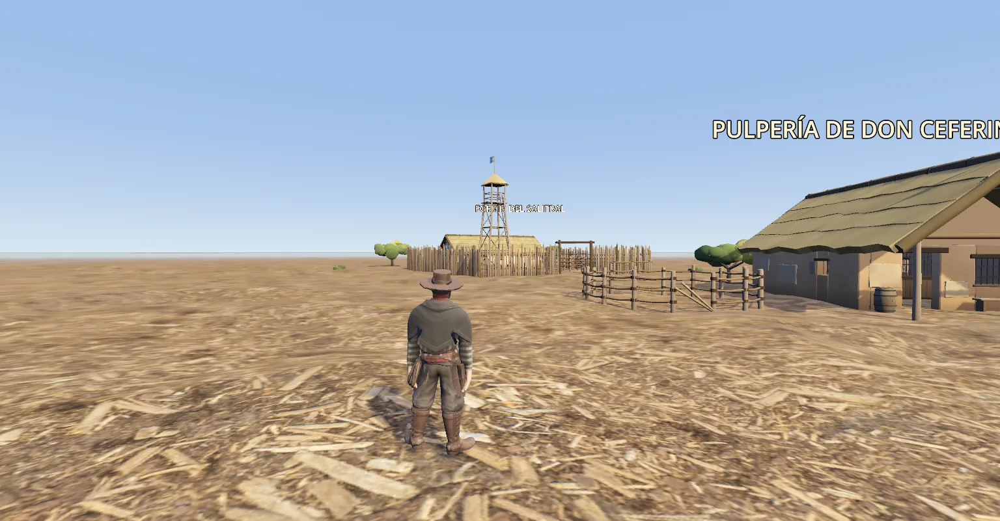
Soldados en el fortín
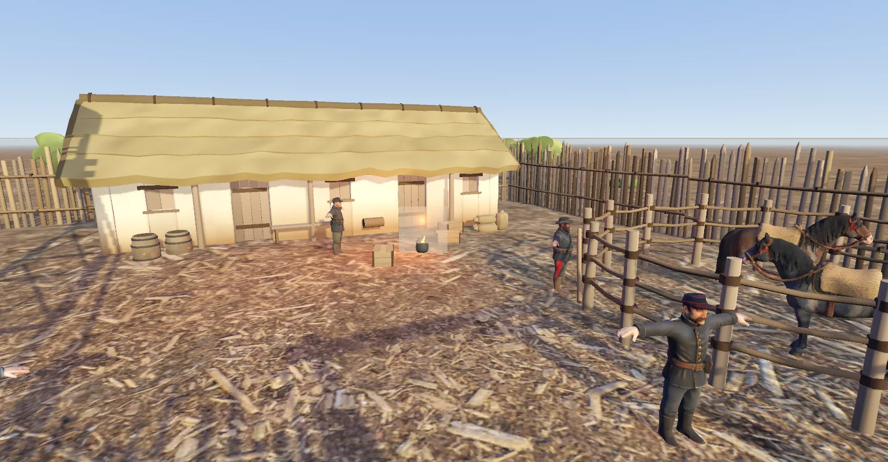
Toldería de Painefil
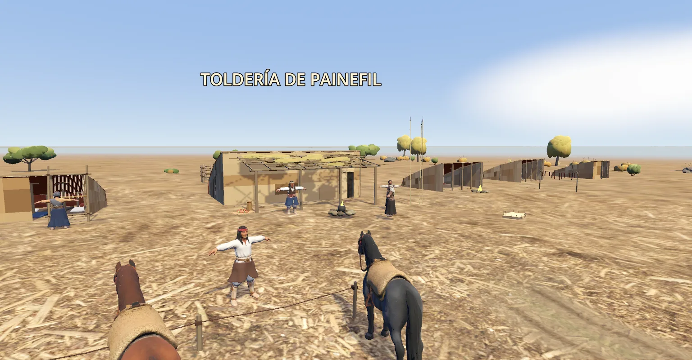
El Limay
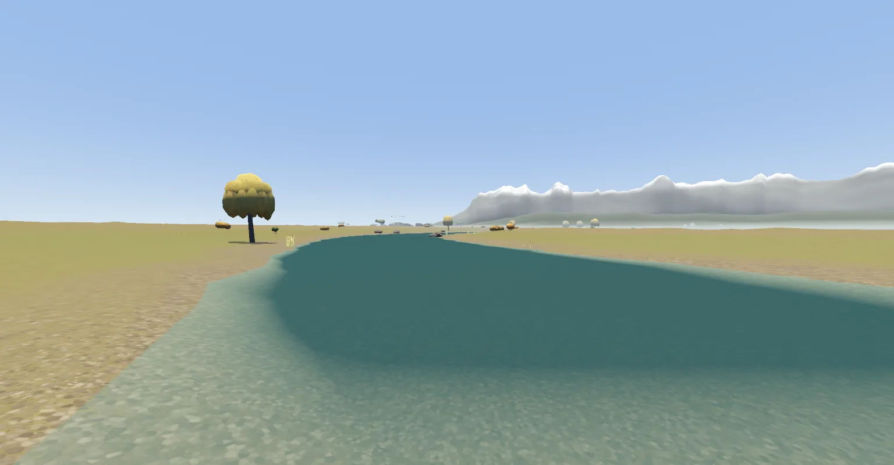
03A caballoTanda 6: montar a Ceniza, marchas, silbido y arreo
Zenón montado
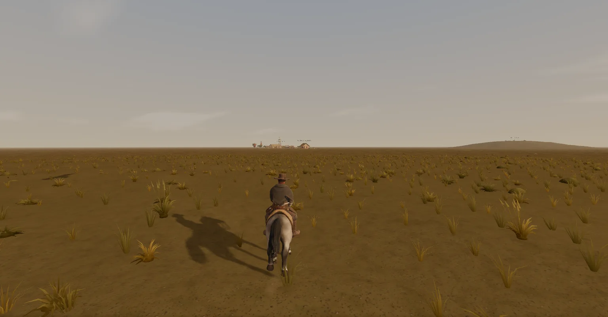
Tropilla arreada
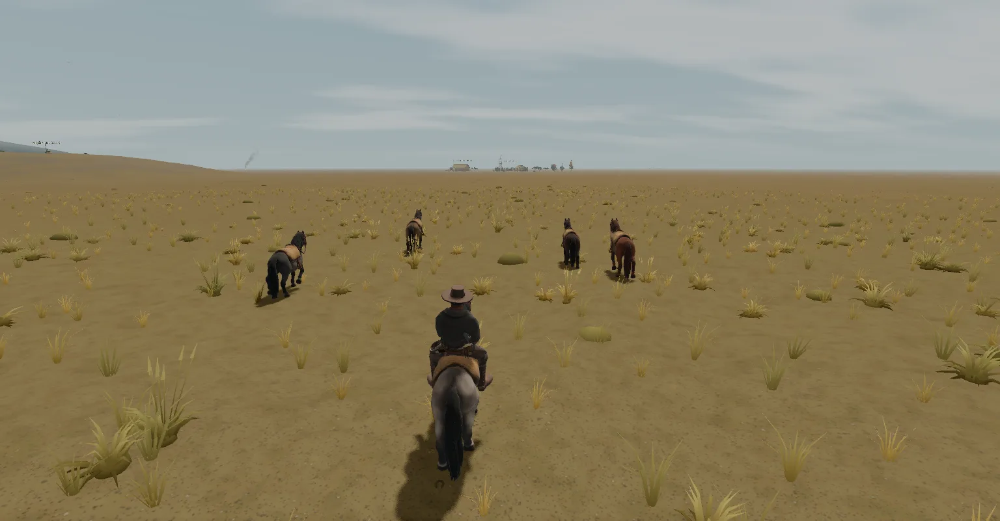
04Pulido de la tanda 4Cada imagen compara antes y después
Estancia al mediodía
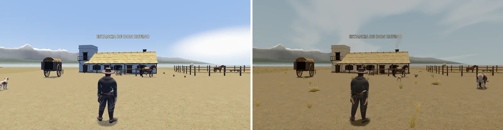
El Limay al amanecer
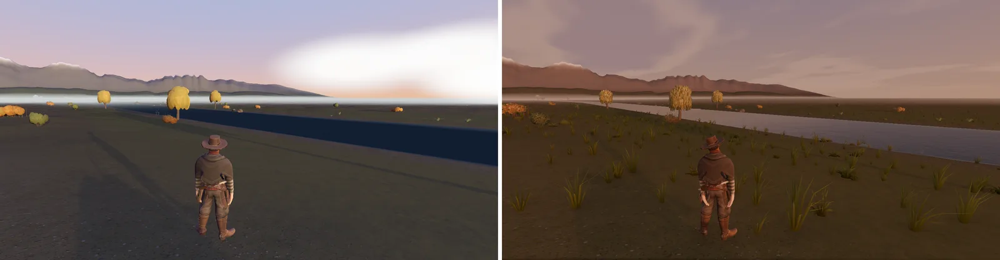
La toldería de noche
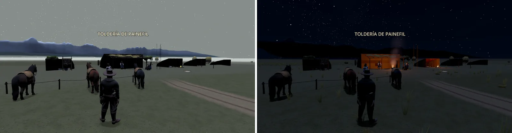
05Desarrollo
| Etapa | Contenido | Estado |
|---|---|---|
| Tanda 1 · La primera escena | Pulpería, fortín, posta, hito, mojón, primeros NPC y animales | Listo |
| Tanda 2 · La marcha y la toldería | Estancia de Don Rufino, toldería, carreta, ribera; piso, Limay y cordillera | Listo |
| Tanda 3 · La línea | Campamento de la tropa, fortín nuevo, Villegas | Listo |
| Tanda 4 · Pulido | Animaciones, mundo, iluminación y el paso a Chile | Listo |
| Tanda 5 · La cuenta | Trama con diálogos, fogón, cuatro finales y guardado | Listo |
| Tanda 6 · A caballo | Montar a Ceniza, arreo y gente que camina | Listo |
| Tanda 7 · A cuenta | Cinco conchabos para bajar la deuda | Listo |
| Tandas 8 y 9 | Sonidos, pausa, ajustes y versión 0.1 para Windows | Listo |
| La intro | 1:45 de planos con la voz de Zenón (v0.1.1) | Listo |
| Lo que sigue | Probar en otra PC, ícono, achicar el paquete; inventario, compras y voces | Pendiente |